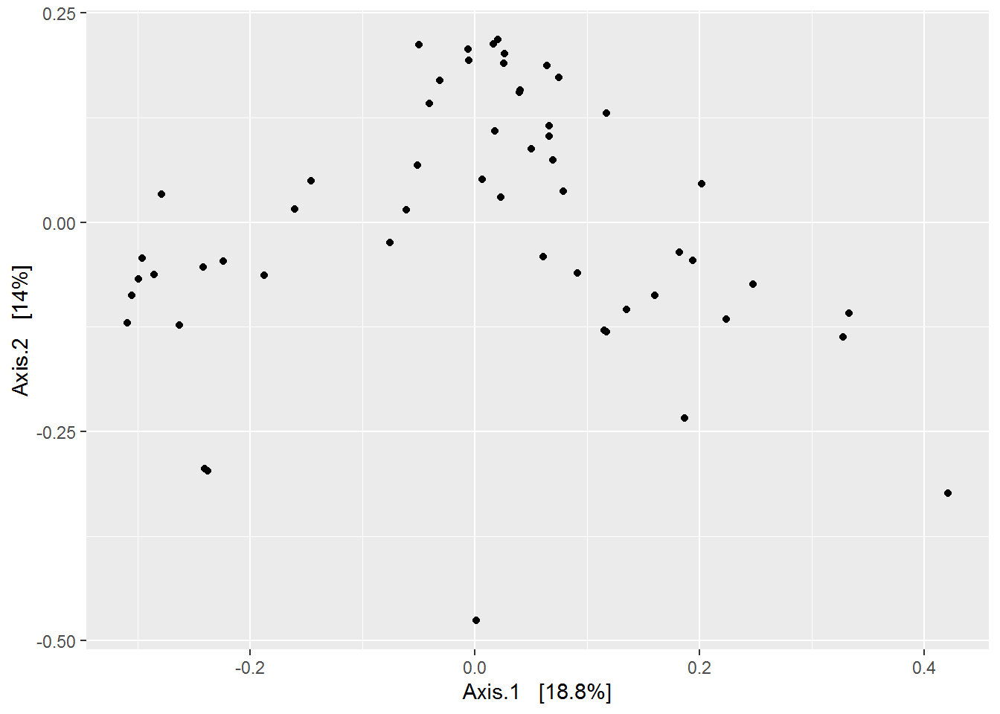
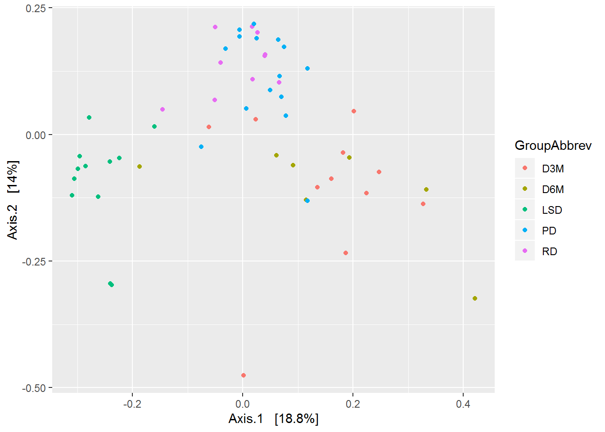
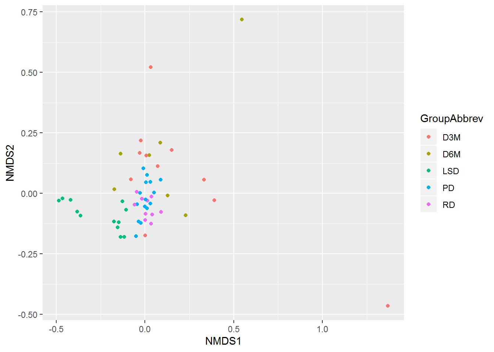
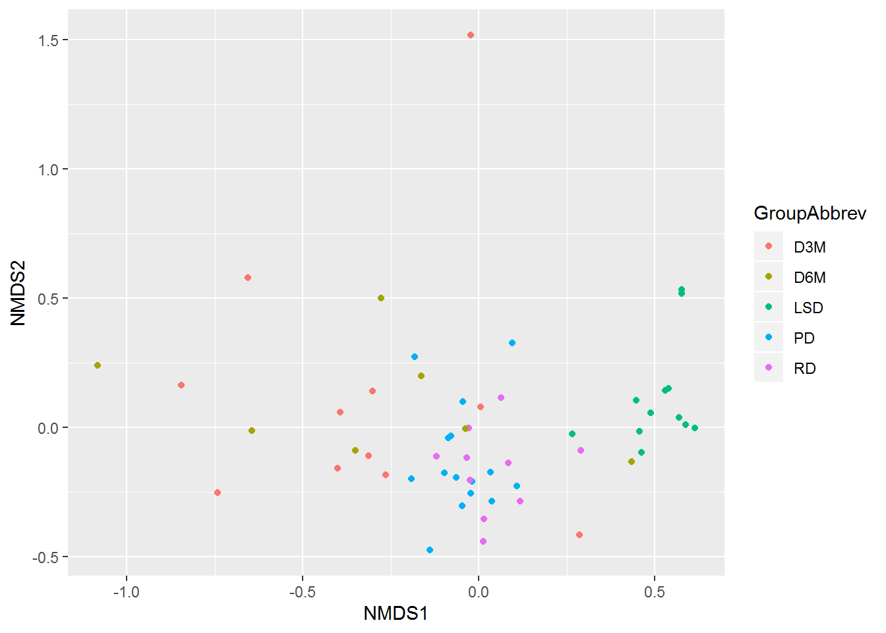
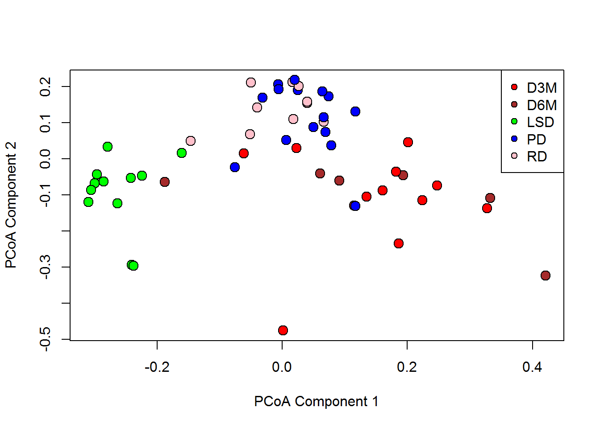
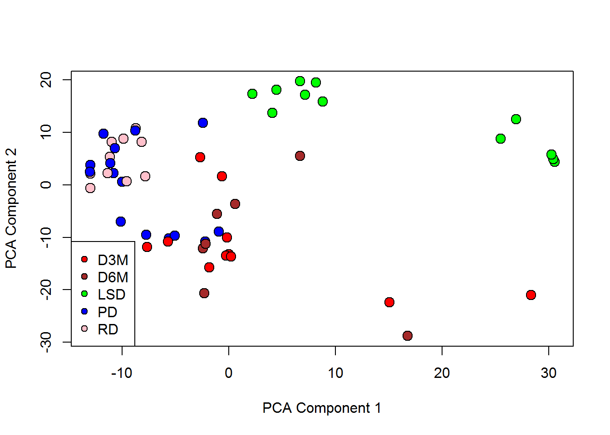
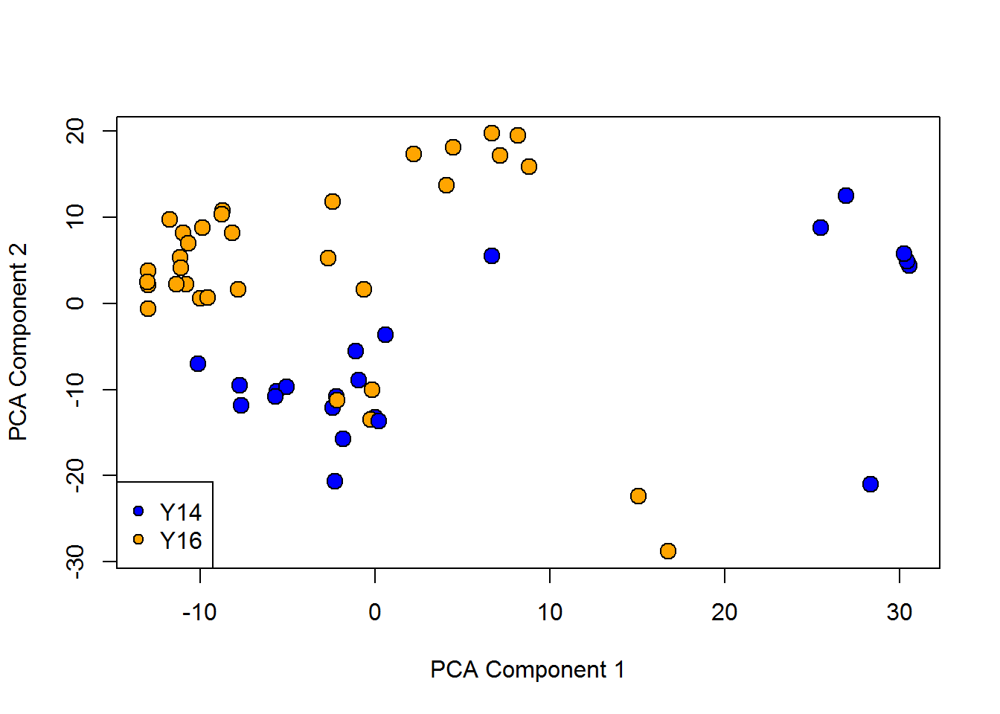
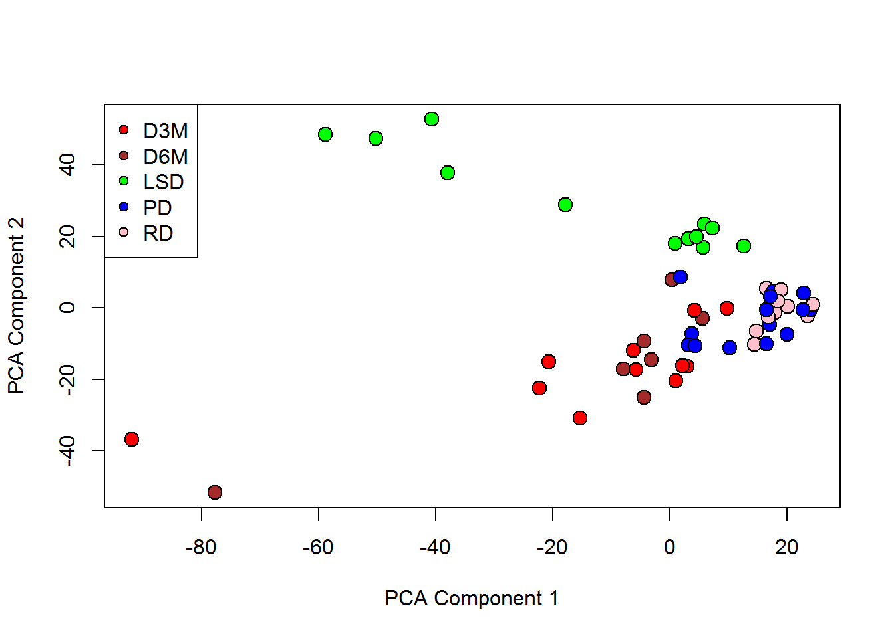

Chapter 6 Beta-Diversity
There have only been a few plotting examples so far in this workbook. This chapter will change this. The best way to understand the concept of beta-diversity is to actually see the differences between samples. In this chapter will learn how to calculate beta-diversity, ordinate the results, visualize beta diversity, and determine if there are statistical differences in beta diversity.
6.1 Calculating beta-diversity in R
We discussed the various ways to calculate beta-diversity in Chapter 3.3.2. There are distance-, dissimilarity-, and covariance-, and phylogenetic-based estimations of beta-diversity, all of which may uncover different aspects of your data. On top of that, normalization procedures will also influence the results. So, the first step is to calculate a matrix of your beta-diversity index. We will first cover where to find available indices, followed by the the functions that will calculate your chosen beta-diversity index.
6.1.1 Identifying your beta diversity indices
The most comphrehensive resources is the distanceMethodList function from the phyloseq package.
distanceMethodList## $UniFrac
## [1] "unifrac" "wunifrac"
##
## $DPCoA
## [1] "dpcoa"
##
## $JSD
## [1] "jsd"
##
## $vegdist
## [1] "manhattan" "euclidean" "canberra" "bray" "kulczynski"
## [6] "jaccard" "gower" "altGower" "morisita" "horn"
## [11] "mountford" "raup" "binomial" "chao" "cao"
##
## $betadiver
## [1] "w" "-1" "c" "wb" "r" "I" "e" "t" "me" "j" "sor"
## [12] "m" "-2" "co" "cc" "g" "-3" "l" "19" "hk" "rlb" "sim"
## [23] "gl" "z"
##
## $dist
## [1] "maximum" "binary" "minkowski"
##
## $designdist
## [1] "ANY"Many options here. The ‘Unifrac’, ‘dpcoa’, and ‘JSD’ require a phylogenetic tree and are computationally more expensive than the others. The options under ‘vegdist’ and ‘betadiver’ are derived from ecology sciences and implemented in the vegdist function from the vegan package. The most common diversity indices in microbial based studies tend to be the Unifrac distances, Bray-Curtis Dissimilarities, and the Jaccard index. We will focus on Bray-Curtis and Jaccard for example purposes.
6.1.2 phyloseq
All of beta-diversity options listed above can be calculated by the phyloseq::distance function from the phyloseq package. Requires 2 arguments, the phyloseq object and the name of the index. The index name has to exactly match one of those listed above. Let’s try it.
# Returns a matrix, which won't be shown for the sake of brevity.
phylo_BrayDis <- phyloseq::distance(phyobj_d10p25, "bray")
# Jaccard index.
phylo_Jaccard <- phyloseq::distance(phyobj_d10p25, "jaccard")6.1.3 vegan
Calculating beta-diversity indices in vegan is also straight forward. The vegdist function is similar to the phyloseq::distance function in that it requires a matrix in the first argument (not a phyloseq object), followed by the name of the index. Thus, we need to extract the OTU table from the phyloseq object. Although there is an extra step here, there could be instances where you are not using phyloseq.
# Load package
library(vegan)
# Extract OTU table.
UCDcounts <- abundances(phyobj_d10p25)
# Samples need to be rows for vegdist() to calculate between sample distances/dissimilarities.
tUCDcounts <- t(UCDcounts)
# Bray index.
vegan_BrayDis <- vegdist(tUCDcounts, "bray")Are the two distance matrices equal? They should be, the phyloseq::distance uses vegdist underneath it’s hood.
# Use setequal() to test whether all elements are TRUE
setequal(phylo_BrayDis == vegan_BrayDis, TRUE)## [1] TRUE6.2 Ordinations
Ordinations are used to reduce the dimension of a high-dimensional dataset into a new set of components. Hopefully, just a few of these new components can summarise the variance in the data and then project it onto a 2- or 3-dimensional plot. Those of you who are familiar with Principal Component Analysis should have no problem understanding these methods. We actually will be using PCA later in this chapter!
In this section, we will learn how to take our dissimilarity/distance matrix and apply it to Principal Co-ordinate Analysis (PCoA) and non-multi dimensional scaling (NMDS). We will do this in outside of the phyloseq environment for the sake of completeness.
6.2.1 phyloseq
The phyloseq package uses the ordinate function to calculate ordinations. The ordinate function is a wrapper for ordinations in other packages, which means it does not contain the coding itself to perform the ordination. It has to call functions from other packages to conduct the ordination. However, it is very convenient because the ordination function preps the data based on the required syntax of the called ordination function. Thus, there is no need for additional coding. Let’s take a look at an example.
The ordinate runs Detrended Correspondence Analysis as the default ordination using Bray-Curtis dissilarities. We will update this to ensure we run PCoA.
# ordinate() calls the pcoa() function from the ape package.
UCD_bray_PCoA <- ordinate(phyobj_d10p25, method="PCoA", distance="bray")Since ordinate is a wrapper for the ape::pcoa function, the output is what ape::pcoa would show. It is not shown because it is a very verbose output. But as you can see, very straight forward function. Just change the ordination and distance and ordinate will return the output from the supplied ordination. Let’s see one more example.
# ordinate() calls the metaMDS() function from the vegan package.
UCD_jac_NMDS <- ordinate(phyobj_d10p25, method="NMDS", distance="jaccard")## Square root transformation
## Wisconsin double standardization
## Run 0 stress 0.1207804
## Run 1 stress 0.1207855
## ... Procrustes: rmse 0.00220263 max resid 0.01280263
## Run 2 stress 0.1237745
## Run 3 stress 0.1141577
## ... New best solution
## ... Procrustes: rmse 0.1020114 max resid 0.2443601
## Run 4 stress 0.1141591
## ... Procrustes: rmse 0.0002147099 max resid 0.001120825
## ... Similar to previous best
## Run 5 stress 0.1141406
## ... New best solution
## ... Procrustes: rmse 0.004400784 max resid 0.02251077
## Run 6 stress 0.1141336
## ... New best solution
## ... Procrustes: rmse 0.003149087 max resid 0.01686469
## Run 7 stress 0.114135
## ... Procrustes: rmse 0.0002331117 max resid 0.001254342
## ... Similar to previous best
## Run 8 stress 0.1143997
## ... Procrustes: rmse 0.0146326 max resid 0.1022156
## Run 9 stress 0.1141317
## ... New best solution
## ... Procrustes: rmse 0.0004295849 max resid 0.002347916
## ... Similar to previous best
## Run 10 stress 0.1141439
## ... Procrustes: rmse 0.00164618 max resid 0.008906703
## ... Similar to previous best
## Run 11 stress 0.1141308
## ... New best solution
## ... Procrustes: rmse 0.0004978797 max resid 0.002536617
## ... Similar to previous best
## Run 12 stress 0.4043389
## Run 13 stress 0.1143973
## ... Procrustes: rmse 0.01470755 max resid 0.1021652
## Run 14 stress 0.1141322
## ... Procrustes: rmse 0.0006315912 max resid 0.003383372
## ... Similar to previous best
## Run 15 stress 0.1245594
## Run 16 stress 0.1141397
## ... Procrustes: rmse 0.002163083 max resid 0.01154892
## Run 17 stress 0.1141384
## ... Procrustes: rmse 0.001575663 max resid 0.008491128
## ... Similar to previous best
## Run 18 stress 0.1141651
## ... Procrustes: rmse 0.002874055 max resid 0.01361668
## Run 19 stress 0.1234054
## Run 20 stress 0.114133
## ... Procrustes: rmse 0.0008075138 max resid 0.004342552
## ... Similar to previous best
## *** Solution reachedIf you recall from Chapter 3.3.2.3, NMDS iteratively computes a best fit model and stops when it reaches a stop criteria. The output here shows the NMDS algorithm searching for the best fit. Let’s look at the final output.
# View output
UCD_jac_NMDS##
## Call:
## metaMDS(comm = veganifyOTU(physeq), distance = distance)
##
## global Multidimensional Scaling using monoMDS
##
## Data: wisconsin(sqrt(veganifyOTU(physeq)))
## Distance: jaccard
##
## Dimensions: 2
## Stress: 0.1141308
## Stress type 1, weak ties
## Two convergent solutions found after 20 tries
## Scaling: centring, PC rotation, halfchange scaling
## Species: expanded scores based on 'wisconsin(sqrt(veganifyOTU(physeq)))'The output provides some details regarding the NMDS ordination. Firstly, the NMDS is configured for 2-dimensions and the scores (sample variance) was centered and rotated similar to PCA. The NMDS did not reach a best fit; it stopped after 20 tries and used the ‘best’ configuration out of the 20 iterations.
6.2.2 vegan
Lets look at the metaMDS function in the vegan package a little closer. It has several arguments that allow extensive customization of the ordination. We are going to review a handful of the arguments within metaMDS and how they can be used to configure the NMDS. Please refer to the help page, ?metaMDS, for further details.
The first argument, ‘comm’, can either take your actual data (Counts, proportional abundance, transformed counts, etc.) or a symmetric square distance/dissimilarity matrix. The second argument identifies the distance/dissimilarity index if data is loaded instead of a distance/dissimilarity matrix. I recommend inputting a distance/dissimilarity matrix because you have finer control over the input. The next argument, ‘k’, sets the number of dimensions. It is generally recommended to use the minimum number of dimensions, unless you are not finding convergence solutions. The help page recommmends increaseing k by 1 to help find convergence solutions. The next arguments, ‘try’ and ‘trymax’ set the minimum and maximum number of iterations. The ‘engine’ argument defines the MDS variant to run. Leave this alone unless you have a good reason to alter. Lastly, the ‘autotransform’ arguments defaults to TRUE and this allows metaMDS to use detect whether a tranformation is required in the supplied data. It uses a commonly used standardization in ecological sciences, the Wisconsin Double Standardization, after taking the square root of the data. The autotranform argument can be set to FALSE if you’ve already normalized your data (e.g., CLR normalized).
The phyloseq NMDS was run with the Jaccard index and stated that a convergence was not found, so we will also use the Jaccard index here and alter the dimensions and max trys. Data is not normalized, so we will keep the ‘autotranform’ argument at it’s default setting.
# We will use the transposed count data to ensure Samples are rows.
vegan_JaccDis <- vegdist(tUCDcounts, "jaccard")
# Displaying the function on multiple lines to emphasize the multiple arguments.
UCD_jac_veganNMDS <- metaMDS(
comm = vegan_JaccDis,
k = 3,
try=10,
trymax=50
)## Run 0 stress 0.1264836
## Run 1 stress 0.1266075
## ... Procrustes: rmse 0.006092033 max resid 0.03708389
## Run 2 stress 0.1264853
## ... Procrustes: rmse 0.0006757276 max resid 0.002130777
## ... Similar to previous best
## Run 3 stress 0.1264785
## ... New best solution
## ... Procrustes: rmse 0.00216278 max resid 0.0108295
## Run 4 stress 0.1264755
## ... New best solution
## ... Procrustes: rmse 0.0009350028 max resid 0.003242791
## ... Similar to previous best
## Run 5 stress 0.1264815
## ... Procrustes: rmse 0.00118572 max resid 0.004663852
## ... Similar to previous best
## Run 6 stress 0.1265959
## ... Procrustes: rmse 0.005236279 max resid 0.03320815
## Run 7 stress 0.1264837
## ... Procrustes: rmse 0.001924231 max resid 0.009461896
## ... Similar to previous best
## Run 8 stress 0.1264779
## ... Procrustes: rmse 0.0007789873 max resid 0.003198285
## ... Similar to previous best
## Run 9 stress 0.1357964
## Run 10 stress 0.1393982
## *** Solution reachedUsing 3 dimensions allows us to reach the best solution with less iterations. Let’s see the output.
# View output
UCD_jac_veganNMDS##
## Call:
## metaMDS(comm = vegan_JaccDis, k = 3, try = 10, trymax = 50)
##
## global Multidimensional Scaling using monoMDS
##
## Data: vegan_JaccDis
## Distance: jaccard
##
## Dimensions: 3
## Stress: 0.1264755
## Stress type 1, weak ties
## Two convergent solutions found after 10 tries
## Scaling: centring, PC rotation
## Species: scores missingTurns out the ‘Stress’ statistic is lower in the previous NMDS. This is likely due to the normalization that metaMDS applied to the count data prior to determining the Jaccard Indices. Still, we have good/fair stress level at <0.2 (> 0.3 is considered poor). I would expect some subtle differences in the plots.
6.2.3 ape
The pcoa funtion is straight forward to run; all you have to input is the symmetric square distance/dissimilarity matrix. Note, the help page, ?pcoa does not recommend using proportionally scaled data in PCoA and suggests PCA for that data.
We will use Bray-Curtis Dissimilarities on non-normalized counts for this example. Recall from above that the output from pcoa is extremely verbose, therefore, we will not print the output here.
# Load library if necessary
library(ape)
# We will use the Bray Dissimilarities object that we calculated earlier.
UCD_bray_apePCoA <- pcoa(vegan_BrayDis)6.3 Visualizing ordinations
We use ordinations to summarize high-dimensional data into a set of new components. These components can be broken down to show the variance associated with samples, often referred to as “scores”. Plotting the “score” values can sometimes show which samples are more similar to each other and dissimilar from others. More similar scores will have smaller distances between them and cluster closer together, whereas dissimilar scores will have large distances between them and cluster farther away from each other. As with most things in R, there are several ways to plot this data. We will first describe the phyloseq workflow and then provide examples in base R.
6.3.1 phyloseq
The plot_ordination function from phyloseq is probably the most user-friendly option for plotting. It integrates the Sample Metadata in the phyloseq object to aid in the visualization of sample differences, so everything is streamlined. The output of plot_ordination uses the popular plotting packge, “ggplot2”, as the graphical output, thus additional graphical options (e.g., point sizing, colors, etc) are customizeable using the ggplot2 syntax. I happen to be more versed in graphical options using base R functions, so I will refer you to ggplot2’s reference page. In addition, the phyloseq website has a tutorial page dedicated to plotting ordinations.
plot_ordination requires 2 arguments at minimum: 1) a phyloseq object that created an 2) ordination from ordinate. A third argument specifies whether you want to plot ‘samples’, ‘taxa’, or a ‘biplot’. The latter of these combines samples and taxa information on the same plotting space. This works well with a small set of samples and taxa, but not with the large amount of taxa in our plot. That option may work will at the phylum or class level, but not at the more granular taxonomic levels. Let’s plot the PCoA that we created with ordinate.
# Minimal example
plot_ordination(phyobj_d10p25, UCD_bray_PCoA)
There is no discriminant information on the plot. Ordinations are considered an un-supervised multivariate technique, meaning that these techniques display the inherent variation within the data and are not directed to maximize the variation based on a modeling construct. We can define colors for samples based on our categorical metadata. If variance is inherently explained by our categorization within these components, then we should see similar and dissimilar clusters of samples.
Let’s see if there is any variation by diabetic group. We can do this by changing the ‘color’ argument to a column name from the Sample Metadata. We can obtain these names using the sample_variables function if we need the exact cases.
# Sample column names
sample_variables(phyobj_d10p25)## [1] "SampleID" "Rat" "GroupAbbrev" "Collection"# Will use the "GroupAbbrev" column
plot_ordination(phyobj_d10p25, UCD_bray_PCoA, color="GroupAbbrev")
Okay, good and bad things about this plot. The default size of the points are very small and discriminating with 5 colors can be challenging. This is all customizable by adding on additional ggplot2 functions; however, we will not cover this in this workshop. The good part of this plot is you can see discrimination of experimental groups! The PD and RD groups cluster together at the top of the graph, the D3M and D6M groups drift out toward the positive values on the first axis, while the LSD group clusters together on the negative values of the first axis.
Let’s talk a little bit more about how we would interpret this output. Note that each axis has a percentage associated with it, 18.8% for the Axis-1 (the x-axis) and 14% for Axis-2 (y-axis). This is the proportion of the overall variance explained by this component. Thus, the information presented here, e.g., discrimination of group clusters, on 2 components explains 32.8% (18.8% + 14%) of the overall variation in the data.
We are also looking at how a particular component contains discriminant information, i.e., clusters of data that are separate from each along a particular component. For example, LSD rats are discriminated from UCD-T2DM Rat groups along the first component (Axis-1). An argument could be made that the RD and PD groups have a bit of distance from the D3M and D6M group on component 1, but overall, the distance between LSD rats and UCD-T2DM rats is much greater. Thus, we would assume that the variance associated with component 1 (18.8%) is mainly attributed to the LSD and UCD-T2DM rat discrimination.
Variation associated with the cluster of PD and RD rats relative to the remaining rats is also apparent on component 2. While the distance is not as large as the LSD - UCD-T2DM discrimination on component 1, it is still quite apparent. When you consider the score values (i.e., samples) only on Axis-2, the LSD, D3M, and D6M do not differ from each other (unlike on component 1). However, you could almost run a line through component 2, just above zero, that will discriminate the PD and RD rats from the LSD, D3M and D6M rats. Thus, we can make the statement that component 2 contains variation discriminating the cluster of PD & RD rats from the other groups.
Now let’s see what a NMDS ordination looks like using Bray-Curtis Dissimilarities using the phyloseq workflow.
# We fit NMDS with Jaccard index in the previous example
# Turned the iteration messages off for the sake of brevity.
UCD_bray_NMDS <- ordinate(phyobj_d10p25, method="NMDS", distance="bray")
# Will use the "GroupAbbrev" column to layer colors on scores.
plot_ordination(phyobj_d10p25, UCD_bray_NMDS, color="GroupAbbrev")
Very different than the PCoA. As these techniques are un-supervised and summarise the overall variance, they are subject to capture variance explained by outlying samples. This is also why PCA is sometime used to identify outliers in multivariate data. In this graph, you can see some semblance of the PCoA; for example, the LSD rats cluster together and away from the UCD-T2DM rats, and the PD/RD rats cluster indistinguishable from each other and are more dissimilar than LSD and D3M/D6M rats. However, none of this is strongly interpretable on this ordination because of the presence of outliers.
Also, note that the % explained variance is not added to the axis label. This is because the NMDS algorithm iteratively fits the points until the samples most closely matches the dissimilarities in the original matrix. Thus, NMDS does not partition overall variance similar to PCA and PCoA. The score units are arbitrary and only define where the orientation of the scores.
Why do we have clear outliers in the NMDS ordination and not in the PCoA ordination? Could be various reasons, but likely due to the ordinations themselves, but could also be the default normalization in the metaMDS function. Fortunately, you can pass arguments from metaMDS to ordinate as though they are the same functions. Let’s try without the transformation, 3 components, and alter the min/max iterations.
# Make another NMDS
UCD_bray_NMDSconfig <- ordinate(phyobj_d10p25, method="NMDS", distance="bray", autotransform=FALSE, try=10, trymax=50, k=3)
plot_ordination(phyobj_d10p25, UCD_bray_NMDSconfig, color="GroupAbbrev")
An outlier still is present along component 2, however we now have a little better resolution among the LSD and UCD-T2DM samples along component 1.
6.3.2 Base R
There may be beta-diversity workflows that are not compatible with phyloseq. For example, it is recommended to use PCA after using a CLR transformation, and PCA is not an ordination option in plot_ordination. We will use this section to describe the non-phyloseq plotting workflow.
Let’s see how different normalizations influence the ordinations. We’ve already seen an example of a PCoA using Bray-Curtis Dissimilarities on untransformed data. Let’s apply various normalizations and see if the clusters are presented different.
These examples includes immediate and advance coding. Examples of this workflow were shown in Chapters 2.8.4 and 2.8.6.
As a reference, we will redo the PCoA using Bray-Curtis dissimilarities on non-normalized data. We have already calculated the PCoA in Section 6.2.3, so we just need to extract the scores from this object.
# Most functions contain their data outputs in lists. So many times you can use $ to extract the output.
# Use the str() function on the object can help identify the named element to extract.
UCD_bray_pcoa_scores <- UCD_bray_apePCoA$vectors %>% as.data.frame()
UCD_bray_pcoa_scores$SampleID <- rownames(UCD_bray_pcoa_scores)
# Extract Sample Metadata
UCDrats_MetaData <- meta(phyobj_d10p25)
# Join data frames
UCD_bray_pcoa_scsDF <- inner_join(UCDrats_MetaData, UCD_bray_pcoa_scores, by="SampleID")
# See the help page, ?plot, for more options
plot(
# Input data in x and y arguments
x = UCD_bray_pcoa_scsDF[,"Axis.1"],
y = UCD_bray_pcoa_scsDF[,"Axis.2"],
# pch determines the shape of the point
pch = 21,
# bg denotes the point background color - assiging the colors based on the factor levels.
bg = c("red", "brown", "green", "blue", "pink")[factor(UCD_bray_pcoa_scsDF$GroupAbbrev)],
# ces denotes the size of the points
cex = 1.5,
# xlab and ylab provides the axis labels
xlab = "PCoA Component 1",
ylab = "PCoA Component 2"
)
# Add figure legend
legend(x="topright", legend=c("D3M", "D6M", "LSD", "PD", "RD"), pch=21, pt.bg=c("red", "brown", "green", "blue", "pink"))
Note, that we have to calculate the % variance for each component, unlike plot_ordination. Now lets see what happens when we normalize the data prior to analysis. We will first try the log upper quartile normalization that we referenced in Chapter 3.5.2. However, we run into a couple problems, 1) Conventionally, Bray-Curtis distances are run on counts and 2) that means the negative values in the normalization are incompatible with Bray-Curtis. Instead, we will use Principal Component Analysis as suggested by the pcoa help page.
# Impute zeros by shifting values + 1
UCDcounts_plus1 <- UCDcounts + 1
# Identify the 75 quartile based on only the count distribution.
# Values > 1
counts75distribution <- apply(UCDcounts_plus1, 2, function(x) quantile((x[x > 1] - 1), 0.75))
# Equally these values across all rows
UCD_UQadj <- sweep(UCDcounts_plus1, 2, counts75distribution, "/")
# Apply a log transformation
UCD_logUQnorm <- log(UCD_UQadj)
# Transpose so rows are Samples
tUCD_logUQnorm <- t(UCD_logUQnorm)
# Will use the prcomp() function to perform PCA
tUCD_logUQnorm_pca <- prcomp(tUCD_logUQnorm)
# Extract scores and make new column to join with metadata
tUCD_logUQnorm_pca_scores <- tUCD_logUQnorm_pca$x %>% as.data.frame()
tUCD_logUQnorm_pca_scores$SampleID <- rownames(tUCD_logUQnorm_pca_scores)
# Join data frames
UCD_logUQnorm_pca_scsDF <- inner_join(UCDrats_MetaData, tUCD_logUQnorm_pca_scores, by="SampleID")
# Plot the data
plot(
x = UCD_logUQnorm_pca_scsDF[,"PC1"],
y = UCD_logUQnorm_pca_scsDF[,"PC2"],
pch = 21,
bg = c("red", "brown", "green", "blue", "pink")[factor(UCD_logUQnorm_pca_scsDF$GroupAbbrev)],
cex = 1.5,
xlab = "PCA Component 1",
ylab = "PCA Component 2"
)
legend(x="bottomleft", legend=c("D3M", "D6M", "LSD", "PD", "RD"), pch=21, pt.bg=c("red", "brown", "green", "blue", "pink"))
We see that there is now a clear separation between two clusters of LSD rats, but overall, the LSD rats are separated from the UCD-T2DM animals. There is also a set of PD rats more aligned with the D3M and D6M rats, which was not as well apparent in the non-normalized data. Where could this be from? Let’s show the same plot, but overlay with the Collection Year.
plot(
x = UCD_logUQnorm_pca_scsDF[,"PC1"],
y = UCD_logUQnorm_pca_scsDF[,"PC2"],
pch = 21,
bg = c("blue", "orange")[factor(UCD_logUQnorm_pca_scsDF$Collection)],
cex = 1.5,
xlab = "PCA Component 1",
ylab = "PCA Component 2"
)
legend(x="bottomleft", legend=c("Y14", "Y16"), pch=21, pt.bg=c("blue", "orange"))
It is clear in this ordination that there is variance associated with a batch effect in the data. Let’s try this again, but with the CLR transformation.
# load libraries if necessary
# library(zCompositions)
# library(rgr)
# Impute zeros with Bayesian-multiplicative treatment
UCDcounts_BMz <- cmultRepl(UCDcounts, method="CZM", output="p-counts")
# Taxa needs be rows and samples need to be columns
UCD_BMz_clr <- clr(UCDcounts_BMz, ifwarn=FALSE)
# PCA needs samples as columns
tUCD_BMz_clr <- t(UCD_BMz_clr)
# tUCD_BMz_clr <- t(UCDcounts_BMz)
# Will use the prcomp() function to perform PCA
UCD_BMz_clr_pca <- prcomp(tUCD_BMz_clr)
# UCD_BMz_clr_pca <- prcomp(scale(tUCD_BMz_clr), center=FALSE)
# Extract scores and make new column to join with metadata
UCD_BMz_clr_pca_scores <- UCD_BMz_clr_pca$x %>% as.data.frame()
UCD_BMz_clr_pca_scores$SampleID <- rownames(UCD_BMz_clr_pca_scores)
# Join data frames
UCD_BMz_clr_pca_scsDF <- inner_join(UCDrats_MetaData, UCD_BMz_clr_pca_scores, by="SampleID")
# Plot the data
plot(
x = UCD_BMz_clr_pca_scsDF[,"PC1"],
y = UCD_BMz_clr_pca_scsDF[,"PC2"],
pch = 21,
bg = c("red", "brown", "green", "blue", "pink")[factor(UCD_BMz_clr_pca_scsDF$GroupAbbrev)],
cex = 1.5,
xlab = "PCA Component 1",
ylab = "PCA Component 2"
)
legend(x="topleft", legend=c("D3M", "D6M", "LSD", "PD", "RD"), pch=21, pt.bg=c("red", "brown", "green", "blue", "pink"))
Not too different from the PCoA ordination using Bray-Curtis Dissimilarities on non-normalized data. The results are just rotated to the right. Here, we are using the covariance-matrix on CLR normalized data. Although the collection year plot is not provided for the CLR PCA, the 5 green LSD samples projecting away from the tight green LSD cluster are separated by collection year.
Overall, the various ordinations we’ve assessed on the UCD-T2DM data described variation associated with the experimental design, and unfortunately, variation associated with the sub-optimal collection periods (i.e., batch effect). There is also the suggestion of outliers in the data. Further analysis may be required without these outlier samples.
6.4 PERMANOVA
We’ve visualized beta-diversity, but we still need to determine whether the discrimination observed in the ordinations are statistically significant. Since the ordinations are un-supervised analyses, there are no hypothesis testing within their algorithms. Generally, the accepted method to determine whether there is a statistical difference in beta-diversity is through Permutational Multivariate Analysis of Variance (PERMANOVA).
Let’s break down the components of PERMANOVA. It is related to an ANOVA in that it partitions variation in response to provided factor(s), but it occurs in multivariate data cloud relating to a dissimilarity or distance matrix. The statistical inferences (i.e., p-value) is determined via a distribution-free permutational technique. So, “PER” refers to the permutational statistical inference, “M”, refers to the fact it is Multivariate, and “ANOVA” because it is an extension of ANOVA.
Since PERMANOVA is based on the ANOVA framework, study designs that require ANOVA testing can be adapted for PERMANOVA. For example, 3-way ANOVA design with main effects and all interactions can be utilized with PERMANOVA. In addition, covariate factors can also be utilized with PERMANOVA.
It should be noted again, that PERMANOVA is routinely used to demonstrate whether discriminant clusters in an ordinations are statistically significant, they do not always sync together. Remember, we can only view up to 3 dimensions of an ordinations like PCoA and PCA. Sometimes 3 components only represent a small to medium amount of the variance in the data. The PERMANOVA interprets all of the variation, not just what we see in the first few components.
To my knowledge, there has not been a way to run a PERMANOVA through phyloseq. If you use phyloseq you have to 1) calculate dissimilarity/distance matrix and 2) extract the Sample Metadata. The actual function we’ll use is the adonis and adonis2 function from the vegan package. Both functions use the formula syntax, but it is a little different than the formula for aov. The left side of the ~ (tilde) is the dissimilarity/distance matrix, and the right side are the factors that you want to measure. The factor(s) link to your metadata file that you supply to the ‘data’ argument.
We will demonstrate a 2-way PERMANOVA using the UCD-T2DM rat data. Main effects of Group and Collection will be assessed with an interaction term. We will also start from the phyloseq object.
# Calculate dissimilarity matrix
phylo_BrayDis <- phyloseq::distance(phyobj_d10p25, "bray")
# Extract sample Metadata
UCDrats_MetaData <- meta(phyobj_d10p25)
# Assess PERMANOVA
adonis(phylo_BrayDis ~ GroupAbbrev + Collection + GroupAbbrev:Collection, data=UCDrats_MetaData, permutations=500)##
## Call:
## adonis(formula = phylo_BrayDis ~ GroupAbbrev + Collection + GroupAbbrev:Collection, data = UCDrats_MetaData, permutations = 500)
##
## Permutation: free
## Number of permutations: 500
##
## Terms added sequentially (first to last)
##
## Df SumsOfSqs MeanSqs F.Model R2 Pr(>F)
## GroupAbbrev 4 2.4174 0.60435 5.2189 0.26701 0.001996 **
## Collection 1 0.3546 0.35465 3.0626 0.03917 0.001996 **
## GroupAbbrev:Collection 3 0.9548 0.31826 2.7484 0.10546 0.001996 **
## Residuals 46 5.3268 0.11580 0.58836
## Total 54 9.0537 1.00000
## ---
## Signif. codes: 0 '***' 0.001 '**' 0.01 '*' 0.05 '.' 0.1 ' ' 1The output provides an ANOVA table. We see similar statistics that we would see from a regular ANOVA, e.g., degrees of freedom, sum of squares, F-statistic, and a P-value. Note, the F-statistic is technically a “psuedo F statistic”. These statistics can be intepreted similar to a regular ANOVA. Hence, the presence of a significant interaction terms suggest we should be assessing Group differences within Collection years. Let’s do it.
# We extracted the metadata in the above chapter.
d10p25CollectionYear <- meta(phyobj_d10p25)$Collection
# Make the logical statement using the %in% (match) operator
CollectionYear14Logic <- d10p25CollectionYear %in% "Y14"
CollectionYear16Logic <- d10p25CollectionYear %in% "Y16"
# Use the prune_samples() function
# First argument is the logical statement, the second is the phyloseq object
phylo_year2014 <- prune_samples(CollectionYear14Logic, phyobj_d10p25)
phylo_year2016 <- prune_samples(CollectionYear16Logic, phyobj_d10p25)
# n of 2 in D6M group. Will drop these samples from analysis.
phylo_year2016 <- prune_samples(meta(phylo_year2016)$GroupAbbrev != "D6M", phylo_year2016)
# Calculate dissimilarity matrix
phylo_BrayDis2014 <- phyloseq::distance(phylo_year2014, "bray")
phylo_BrayDis2016 <- phyloseq::distance(phylo_year2016, "bray")
# Extract sample Metadata
UCDrats2014_MetaData <- meta(phylo_year2014)
UCDrats2016_MetaData <- meta(phylo_year2016)
# Assess PERMANOVA year 2014
adonis(phylo_BrayDis2014 ~ GroupAbbrev, data=UCDrats2014_MetaData, permutations=500)##
## Call:
## adonis(formula = phylo_BrayDis2014 ~ GroupAbbrev, data = UCDrats2014_MetaData, permutations = 500)
##
## Permutation: free
## Number of permutations: 500
##
## Terms added sequentially (first to last)
##
## Df SumsOfSqs MeanSqs F.Model R2 Pr(>F)
## GroupAbbrev 3 1.4137 0.47123 3.4071 0.36218 0.001996 **
## Residuals 18 2.4895 0.13831 0.63782
## Total 21 3.9032 1.00000
## ---
## Signif. codes: 0 '***' 0.001 '**' 0.01 '*' 0.05 '.' 0.1 ' ' 1adonis(phylo_BrayDis2016 ~ GroupAbbrev, data=UCDrats2016_MetaData, permutations=500)##
## Call:
## adonis(formula = phylo_BrayDis2016 ~ GroupAbbrev, data = UCDrats2016_MetaData, permutations = 500)
##
## Permutation: free
## Number of permutations: 500
##
## Terms added sequentially (first to last)
##
## Df SumsOfSqs MeanSqs F.Model R2 Pr(>F)
## GroupAbbrev 3 1.3506 0.45020 4.6813 0.34217 0.001996 **
## Residuals 27 2.5966 0.09617 0.65783
## Total 30 3.9472 1.00000
## ---
## Signif. codes: 0 '***' 0.001 '**' 0.01 '*' 0.05 '.' 0.1 ' ' 1The group effect is significant in both years. But what groups differ from each other. We saw that the PD and RD groups were very similar in the ordinations, so it those groups should not differ between each other. The coding to assess pairwise differences becomes more advanced, but can be done. First, we need to determine all the pairwise combinations and then use those in a sapply function.
This examples includes immediate and advance coding. Examples of this workflow were shown in Chapters 2.8.4 and 2.8.6.
# Identify pairwise comparisons
year2016_combinations <- combn(unique(meta(phylo_year2016)$GroupAbbrev),2)
# Use sapply() to extract data from phyloseq object and then run PERMANOVA
year2016_permanovaPvals <- sapply(1:ncol(year2016_combinations), function(x) {
# Extract combinations
combo <- year2016_combinations[,x]
# Extract metadata
Year16group <- meta(phylo_year2016)$GroupAbbrev
# Make logical statement based on pairwise combinations
Year16subset <- Year16group %in% combo
# Subset phyloseq object
phylo_subset <- prune_samples(Year16subset, phylo_year2016)
# Calculate dissimilarity matrix
BrayDis_subset <- phyloseq::distance(phylo_subset, "bray")
# Extract sample metadata
subsetMetaData <- meta(phylo_subset)
# Run PERMANOVA
permanova <- adonis(BrayDis_subset ~ GroupAbbrev, data=subsetMetaData, permutations=500)
# Isolate p-value from permanova object, round to the 5th digit, and return.
round(permanova$aov.tab[1,6], 5)
})
# Make vector of pairwise combinations
paircomp <- apply(year2016_combinations, 2, paste, collapse=" - ")
# Make data frame with pairwise comparison, p-value, and FDR correction.
paircompDF <- data.frame(Comparison = paircomp, Pvalue = year2016_permanovaPvals, FDR = p.adjust(year2016_permanovaPvals, "fdr"))
# Printing data frame as a table in the text...| Comparison | Pvalue | FDR |
|---|---|---|
| LSD - RD | 0.00200 | 0.004000 |
| LSD - PD | 0.00200 | 0.004000 |
| LSD - D3M | 0.00399 | 0.005985 |
| RD - PD | 0.32535 | 0.325350 |
| RD - D3M | 0.00200 | 0.004000 |
| PD - D3M | 0.00599 | 0.007188 |
Note, the comparison between PD and RD rats was not significant. All other comparisons were significant, which sync with the visualizations from the PCoA ordination in Section 6.3.1.
6.5 Conclusion
We did not cover how to identify which taxa are driving the sample discrimination in the ordinations in this chapter. There are ways to visualize this, but it does no good to plot 400 taxa along with your samples. These analyses describe the global microbial differences between samples. The next chapter will describe how to identify differences in individual taxa, which puts these global changes in context.
Also, feel good here! The tools used to visualize and analyze beta-diversity are typically thought of as advanced statistics. Anytime you’re dealing with hundreds to thousands of variable, you will have to use some more advanced tools. It shouldn’t make complete sense over a single reading, especially if this is your first introduction to microbial sequencing analysis and R. So keep at it and know that you’ve made it pretty far already!